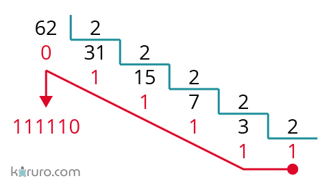

El sistema binario es un sistema numérico de base 2. Utiliza únicamente dos símbolos: 0 y 1.
Es el sistema utilizado en computadoras y dispositivos electrónicos, ya que toda la información digital se representa con estos valores.
Para convertir un número binario a decimal se multiplica cada dígito por una potencia de 2, comenzando desde la derecha.
Ejemplo: Convertir 1011 a decimal
1 × 2³ = 8
0 × 2² = 0
1 × 2¹ = 2
1 × 2⁰ = 1
Se suman los resultados:
8 + 0 + 2 + 1 = 11
Resultado: 11
Para convertir de binario a octal se agrupan los bits de 3 en 3, de derecha a izquierda.
Ejemplo: Convertir 110101 a octal
110 101
Cada grupo se convierte a decimal:
110 = 6
101 = 5
Resultado: 65
Para convertir de binario a hexadecimal se agrupan los bits de 4 en 4, de derecha a izquierda.
Ejemplo: Convertir 101111 a hexadecimal
0010 1111
Cada grupo se convierte:
0010 = 2
1111 = F
Resultado: 2F

| Decimal | Binario |
|---|---|
| 1 | 1 |
| 2 | 10 |
| 5 | 101 |
| 8 | 1000 |
Escribe un número binario:
Decimal: -
Octal: -
Hexadecimal: -